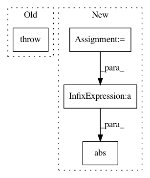

e81142f0869321cd8792e13bfc4f6fb85d9f1efc,libact/query_strategies/uncertainty_sampling.py,UncertaintySampling,make_query,#UncertaintySampling#,62
Before Change
ask_id = j
else:
raise ValueError(
"Invalid method "%s" (available choices: ("lc", "sm", "le")"
% self.method
)
return unlabeled_entry_ids[ask_id]
def get_model(self):
After Change
elif self.method == "sm": // smallest margin
dvalue = self.model.predict_real(X_pool)
if np.shape(dvalue)[1] == 2:
ind = [0, 1]
else:
// Find 2 largest decision values
ind = np.partition(-np.abs(dvalue), 2, axis=1)[:2]
margin = np.abs(np.abs(dvalue[:, ind[0]]) - np.abs(dvalue[:, ind[1]]))
ask_id = np.argmin(margin)
return unlabeled_entry_ids[ask_id]
In pattern: SUPERPATTERN
Frequency: 3
Non-data size: 4
Instances
Project Name: ntucllab/libact
Commit Name: e81142f0869321cd8792e13bfc4f6fb85d9f1efc
Time: 2015-12-22
Author: yangarbiter@gmail.com
File Name: libact/query_strategies/uncertainty_sampling.py
Class Name: UncertaintySampling
Method Name: make_query
Project Name: enthought/chaco
Commit Name: 86d19f6048a17e2ae37fecd1f862e828da20d47a
Time: 2007-11-30
Author: bryanv@651a555e-23ca-0310-84fe-ca9f7c59d2ea
File Name: enthought/chaco2/label.py
Class Name: Label
Method Name: get_bounding_box
Project Name: explosion/thinc
Commit Name: d1073f91087194855dd1f02f7016888634d247b7
Time: 2020-01-20
Author: sofie.vanlandeghem@gmail.com
File Name: thinc/loss.py
Class Name: CosineDistance
Method Name: get_loss